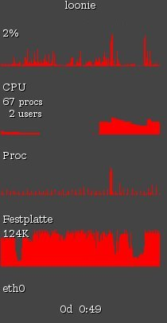

2.12. GKrellM¶
GKrellM[1] ist ein Systemmonitor. Man kann verschiedene Sensoren auswählen und die Darstellung ändern (Diagramm,…). Es ist auch möglich die Informationen über das Netzwerk (z.B. von einem Server) auf dem Desktop anzuzeigen. GKrellM lässt sich frei auf dem Desktop verschieben. Themes zu GKrelM gibt es auf verschiedenen Seiten[2,3]. Es ist auch Erklärung zur Erstellung von GKrellM Themes verfügbar[4].
2.12.1. Konfiguration¶
2.12.1.1. Installation¶
 Die Installation von GKrellM erfolgt wie sonst auch entweder über die Ports oder Packages. Man muss normalerweise keine speziellen Buildoptionen oder Packages angeben. Installation über die Ports:
{kind=link}
# cd /usr/ports/sysutils/gkrellm2/
# make install
# make clean
Das Package installieren:
# pkg_add -r gkrellm
Wenn man nur den Server möchte, dann installiert man GKrellM auf folgende Weise:
# cd /usr/ports/sysutils/grkellm2
# make install -DGKRELLM_SERVER_ONLY
# make clean
2.12.1.2. Lokal¶
Will man die Sensoren vom lokalen PC abrufen, dann ist nur ein Aufruf von GKrellM unter X nötig:
# gkrellm &
2.12.1.3. Remote¶
Eine weitere Möglichkeit GKrellM einzusetzen, ist das Abrufen der Sensoren eines RemotePCs. Dazu muss man zuerst den Server konfigurieren und dann den Client. Der Server muss mit den angepassten make Optionen installiert werden, der Client wird normal installiert.
Auf dem Server kann man ein Script erstellen, das den GKrellM Daemon beim Hochfahren startet. Dazu kann man zum Beispiel rc.local benutzen:
# echo 'nohup su gkrellmd -c '/bin/nice /usr/bin/gkrellmd -u ${Updateintervall} -m ${Maxclients} -P ${Port} -a ${IP} >/var/log/gkrellmd.log 2>&1' &' >> /usr/local/etc/rc.d/rc.local
‚nohup‘ ignoriert das Signal SIGHUP. ‚nice‘ gibt die Priorität an (Default: 10, mit dem Verringer dieses Wertes steigt die Priorität). ‚-u ${Updateintervall}‘ sollte niedriger sein als der Intervall, in dem gkrellmd die Daten updatet. ‚-a {IP}‘ (IP der jeweiligen Netzwerkkarte) gibt an, durch welche Netzwerkkarte auf den Server zugegriffen werden darf.
Seit GKrellM2 gibt es aber auch ein Startskript in /usr/local/etc/rc.d/. Man kann dieses über die rc.conf aufrufen und die Flags übergeben:
# echo 'gkrellmd_enable="YES"' >> /etc/rc.conf
# echo 'gkrellmd_flags="-u ${Updateintervall} -m ${Maxclients} -P ${Port} -a ${IP} >/var/log/gkrellmd.log 2>&1"' >> /etc/rc.conf
Der Client muss nun eine Verbindung aufbauen und GKrellM beim Starten die IP vom Server und den GKrellM-Port übergeben:
# gkrellm -s ${Server-IP} -P ${GKrellM-Port}
2.12.2. Automatisch Starten mit startx¶
Man kann GKrellM einfach mit X zusammen starten, indem man folgendes in die ~/.xinitrc einträgt:
# echo 'gkrellm &' >> ~/.xinitrc
oder wenn man einen Server überwachen will:
# echo 'gkrellm -s ${Server-IP} -P ${GKrellM-Port} &' >> ~/.xinitrc
2.12.3. Links¶
Zuletzt geändert: 2020-11-17